Zombiefication
Create the same results as for the ODE simulation.
Initial phase
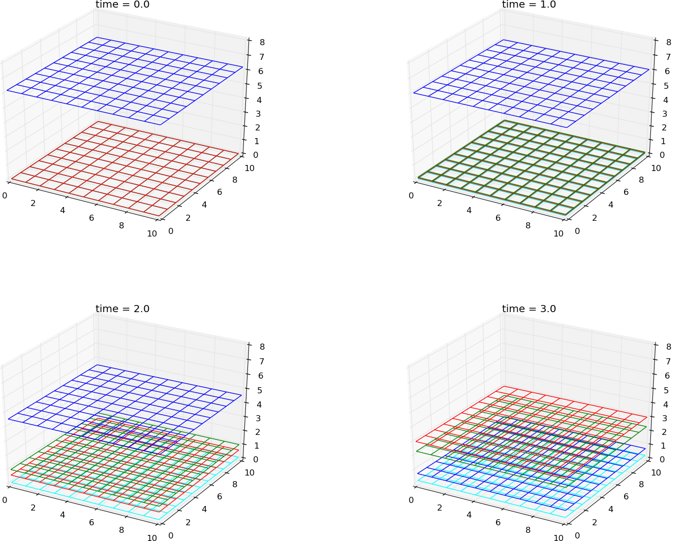
Figure 9: Creates the same results as for the ODE system
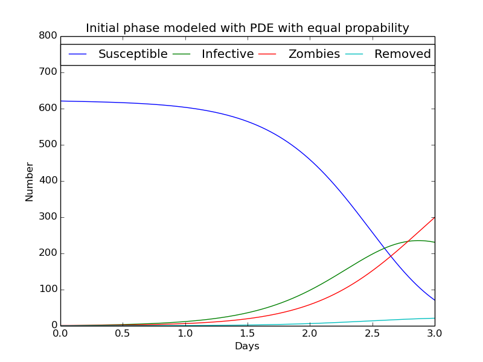
The three phases
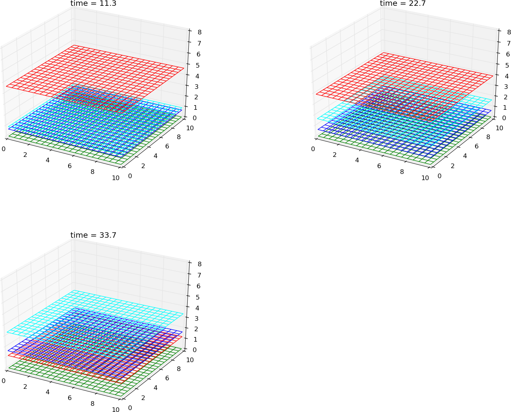
Figure 10: Same results as for the ODE system in the previous chapter
Able to produce the same results as for the ODE
ODE results
PDE results
Start from the middle
Diffusion is 0 for the removed class. Gauss curve from the middle
Figure 11: By using the same parameters, the result seems to be different. Can be explained by the fact that only a small part of the area is in contact with the infected one.It takes some time before everyone are connected to the disease.
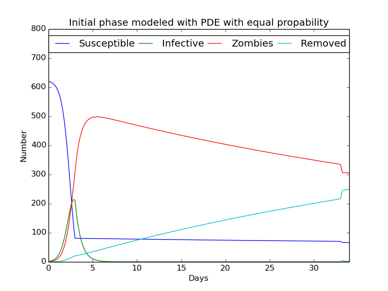
Values each phase with dt= \( 5 \cdot 10^{-4} \)
Variation in diffusion
plots/2D_zombie_three_phases_initial_spread.webm,
Created with different diffusion constants. The groups of susceptible are placed in three different areas.
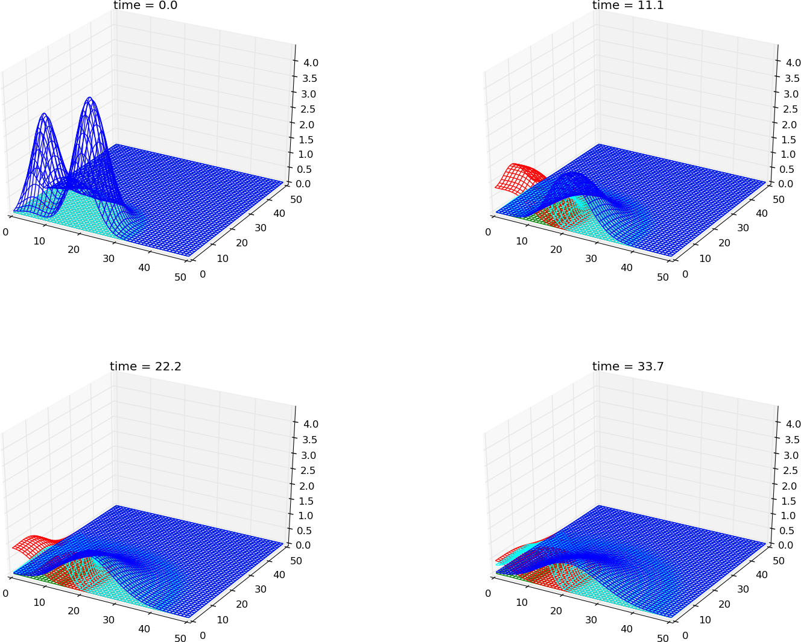
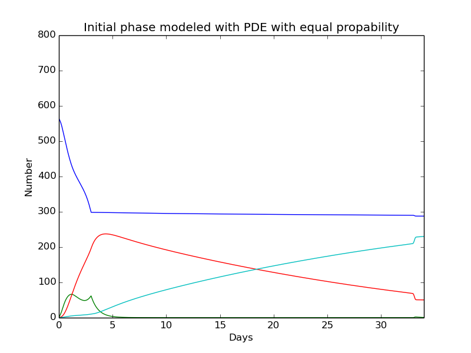
plots/2D_zombie_three_phases_initial_spread_2"
Created with different diffusion constants. The groups of susceptible are placed in three different areas.
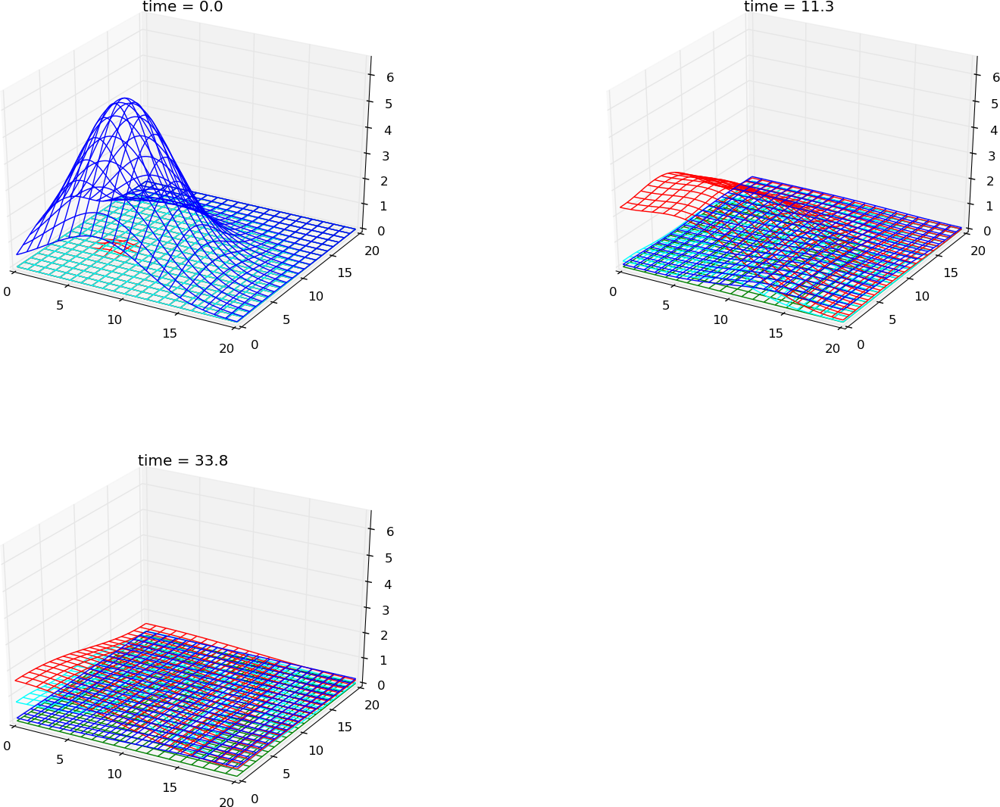
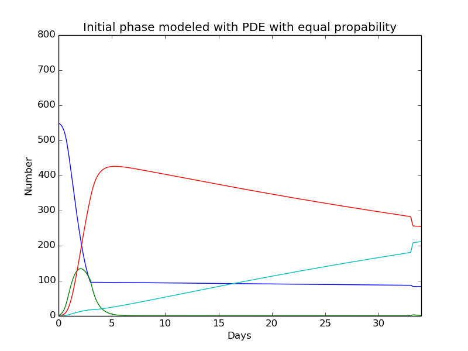
moviename = "plots/2D_zombie_three_phases_spatial_control"
Created with different diffusion constants. The groups of susceptible are placed in three different areas.
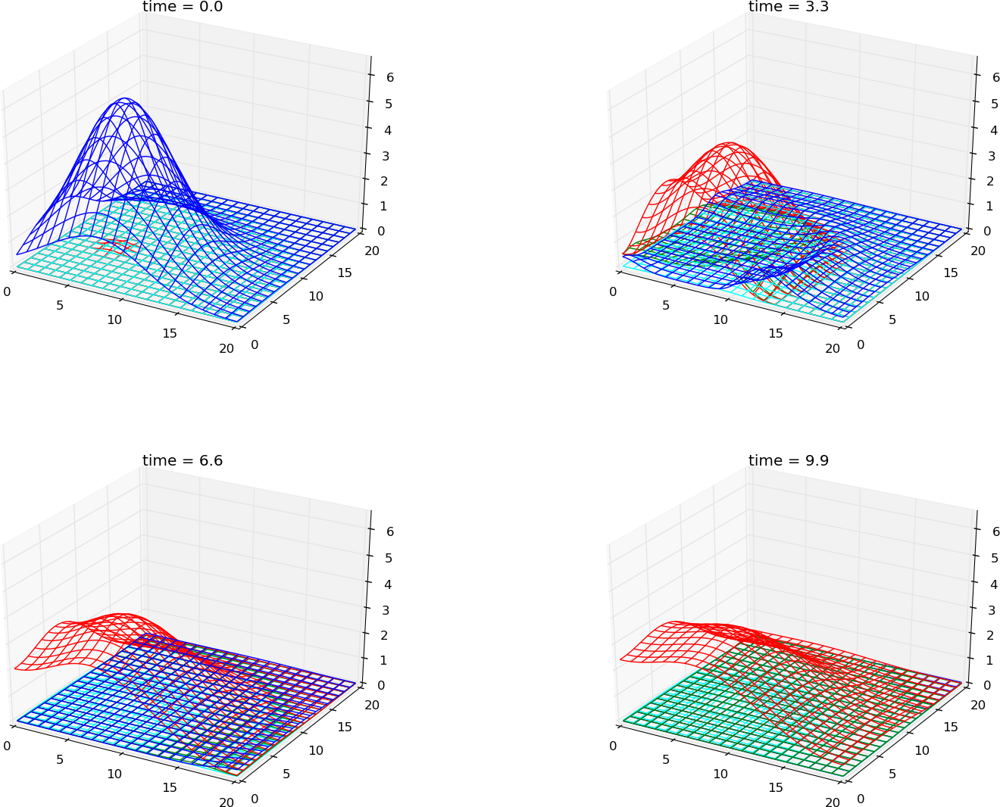
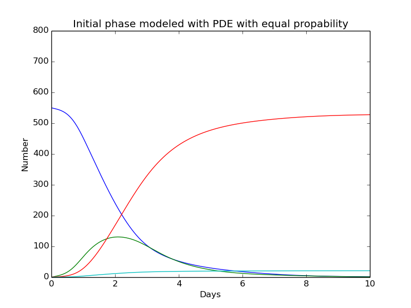
moviename = "plots/2D_zombie_three_phases_spatial_control_3_init"
Created with different diffusion constants. The groups of susceptible are placed in three different areas.
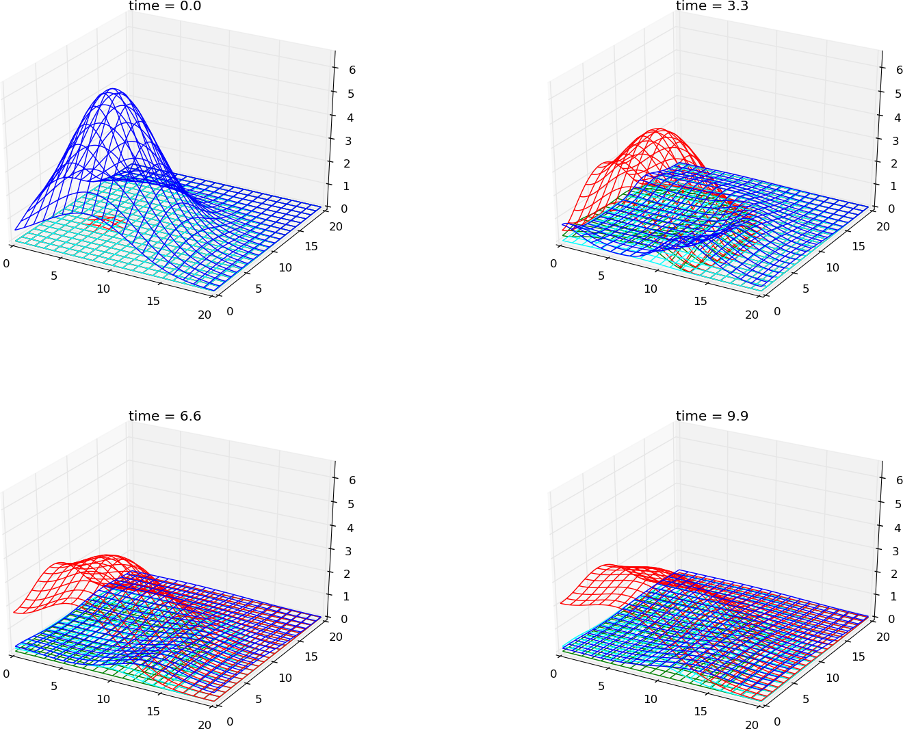
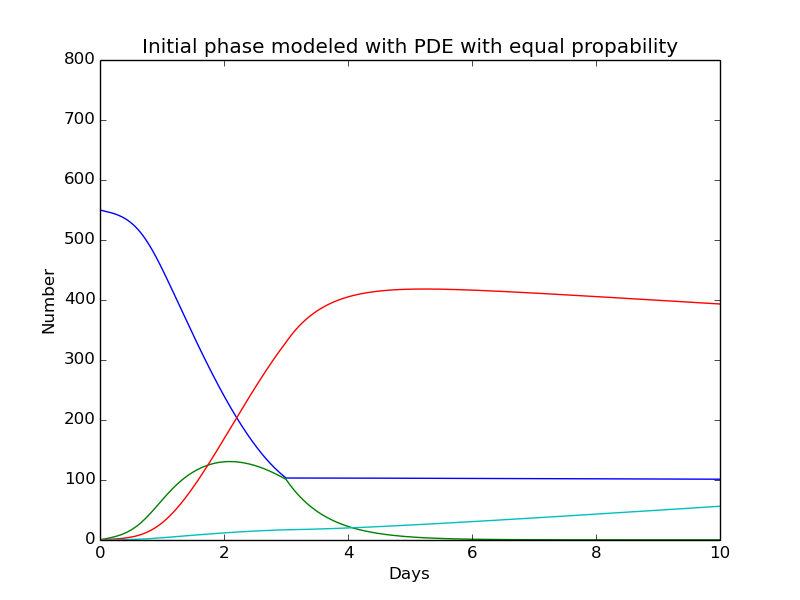